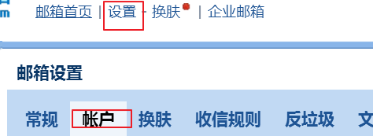
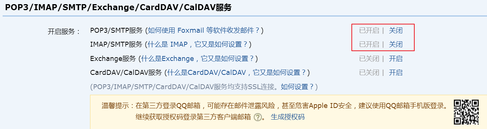
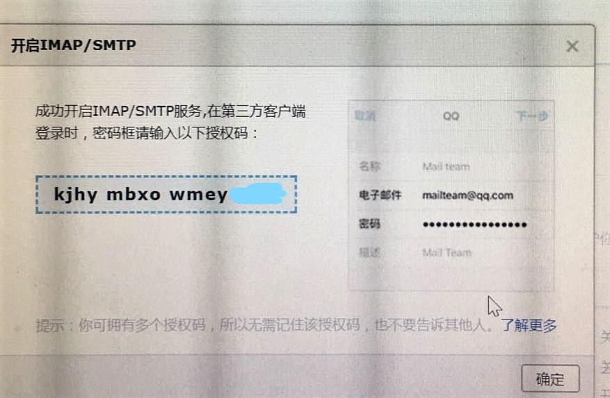
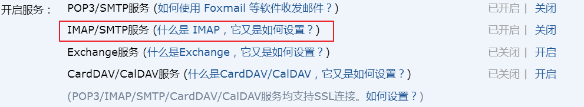
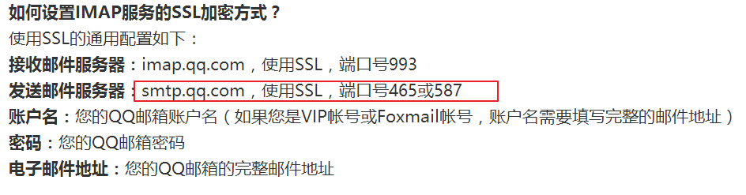

爬虫项目运行在服务端后，我们无法及时了解项目是否正在运行，还是因为异常已经结束运行，考虑到项目的成本，因此我们在项目中增加了邮件功能，在项目运行结束、或者是异常结束的情况下通知开发者。下面简单介绍在项目中使用flask-mail来实现发送邮件的功能。
flask-mail的安装
1 | pip3 install flask-email |
flask-mail的初始化
1 | from flask.ext.mail import Mail |
flask-mail SMTP邮箱服务器配置
| 配置 | 默认值 | 说明 |
|---|---|---|
| MAIL_SERVER | localhost | 电子邮件服务器主机名 |
| MAIL_PORT | 25 | 电子邮件服务器端口 |
| MAIL_USER_TLS | False | 启用传输层TLS协议 |
| MAIL_USER_SSL | False | 启用安全套接层SSL协议 |
| MAIL_USERNAME | None | 邮件账号用户名 |
| MAIL_PASSWORD | None | 邮件账号密码 |
常见邮箱类型配置
配置hotmail邮箱服务器：
1 | MAIL_SERVER = 'smtp.live.com', |
配置qq邮箱服务器：
1 | MAIL_SERVER = 'smtp.qq.com', |
配置126邮箱服务器：
1 | MAIL_SERVER = 'smtp.126.com', |
配置163邮箱服务器：
1 | MAIL_SERVER = 'smtp.163.com', |
虚拟环境账号密码配置过程中的相关问题
一 、虚拟环境账号密码配置过程
保存电子邮件服务器用户名和密码的两个环境变量要在环境中定义。
如果你在Linux 或Mac OS X 中使用bash，那么可以按照下面的方式设定这两个变量：
1 |
|
微软 Windows 用户可按照下面的方式设定环境变量：
1 | (venv) $ set MAIL_USERNAME=<Gmail username> |
windows设置的过程中需要注意
1 | 1. 设置的时候，要把<>去掉，并且！！你的邮箱名和密码，都要用引号括起来，也就是字符串！！！ |
邮箱相关配置
如果以上都是按要求配置，但是邮件却无法发送成功那么可以按如下方法检测
检查并开启邮箱smtp服务
如果我们使用的邮箱没有开启smtp服务，我们的邮件是发不出去的。怎么办. 看了网上一些文章, 发现我的QQ邮箱可能没有开启SMTP服务. 登入QQ邮箱, 设置->帐户.

下图是开启成功后的截图

开启时的过程中还需要发短信才能通过验证, 通过后就可以开启了.通过后会显示如下授权码, 请务必把你QQ邮箱的授权码记下来!!!

密码错误（535 Error：authentication failed）
当我们配置 MAIL_USE_SSL = True 时我们需要更改端口为465
可以进入下图红色连接查看客户端相关配置说明

在该文章中我们看到下面说明

此时如果您的密码配置成邮箱密码可能会出现下面错误
1 | 关于发邮件报错535 Error：authentication failed |
正确的密码配置应该是上面保存的授权码
其他邮箱配置同理
以上内容参考以下文章：